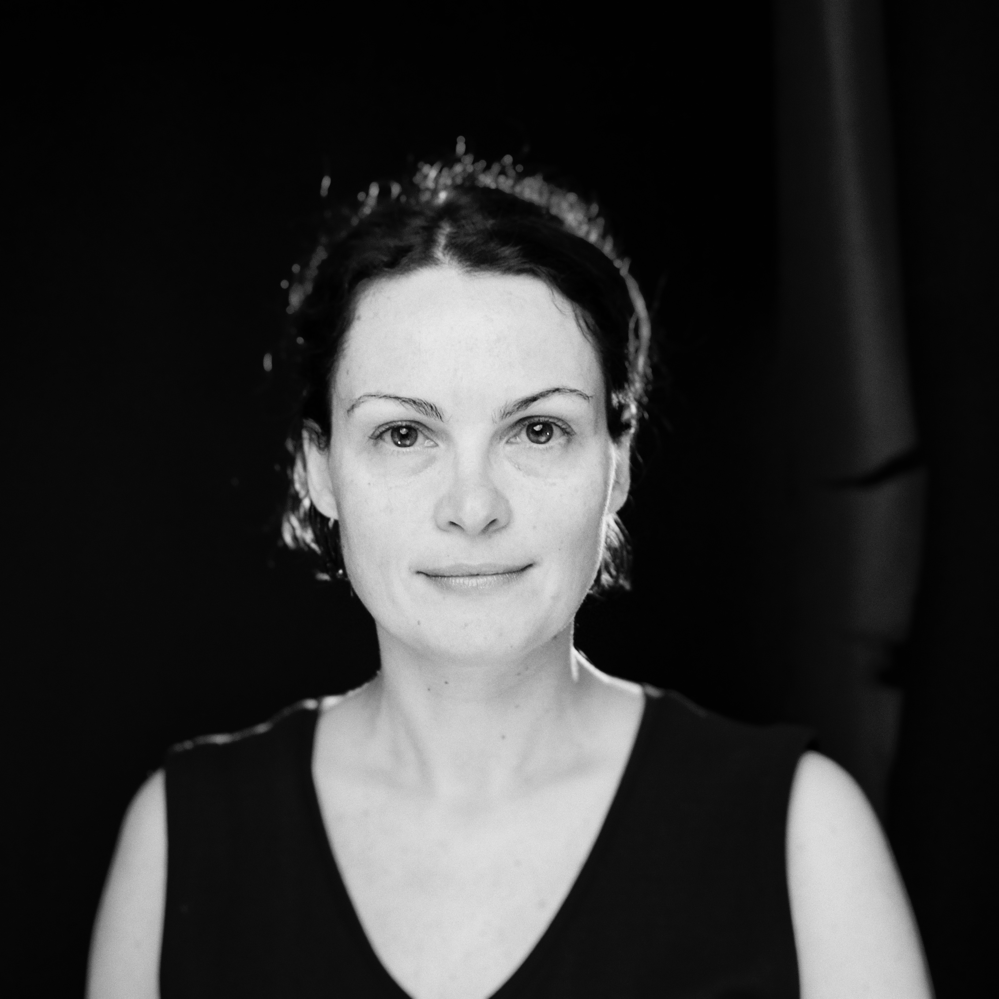

Продуктовый дизайн
от исследования до реализации
Решения на данных, результат для пользователя — для сложных, насыщенных данными корпоративных продуктов.
ДИЗАЙН
Делаю сложное понятным

Образование и бэкграундМагистр технических наук. 10+ лет в графическом и веб-дизайне до перехода в продуктовый дизайн.
Профессиональное обучение по продуктовому дизайну и UX-исследованиям, продуктовой психологии (Growth.Design) и юзабилити-тестированию (IxDF).
Дополнительные сертификаты — в LinkedIn.
Я старший продуктовый дизайнер, специализируюсь на корпоративном B2B SaaS. За эти годы я спроектировала с нуля четыре масштабных продукта в разных индустриях: фасилитация бизнеса и геймификация, HR и управление жизненным циклом сотрудника, системы управления наземными перевозками (TMS) и аналитические инструменты для бизнеса. Кроме того, я консультировала и разрабатывала фичи ещё для более чем 10 продуктов в разных доменах.
Я твёрдо убеждена, что отличные продукты создают команды, а не одиночки. Поэтому я тесно работаю с инженерами, продакт-менеджерами, аналитиками и стейкхолдерами на протяжении всего процесса разработки — ради наилучшего результата.
Мне комфортно вести весь дизайн-процесс от начала до конца. Я умею строить масштабируемую дизайн-систему с нуля, когда это нужно, быстро погружаюсь в сложные бизнес-домены, провожу discovery и пользовательские исследования, настраиваю и анализирую продуктовую аналитику, делаю UX-аудиты, провожу юзабилити-тестирование и подбираю подходящий метод исследования под каждую ситуацию. Я не верю в универсальные фреймворки на все случаи — каждый продукт требует своего подхода, исходя из целей, ограничений и доступных данных.
У меня также есть опыт частично закрывать роль продакт-менеджера, когда это необходимо: помогать команде формулировать требования, приоритизировать работу и сводить вместе потребности бизнеса и пользователей.
Я уверенно перевожу продуктовые идеи в понятные спецификации для инженерных команд, документирую фичи в Figma и делаю всё — от low-fidelity концептов до high-fidelity интерактивных прототипов.
В последнее время я активно встраиваю AI в процессы исследований, дизайна и разработки. Я считаю, что AI-ассистенты становятся следующим большим слоем интерфейса для сложного софта — они позволяют пользователю выполнять рутинные операционные задачи через естественный язык или голос. Это направление, в котором мне особенно интересно продолжать.